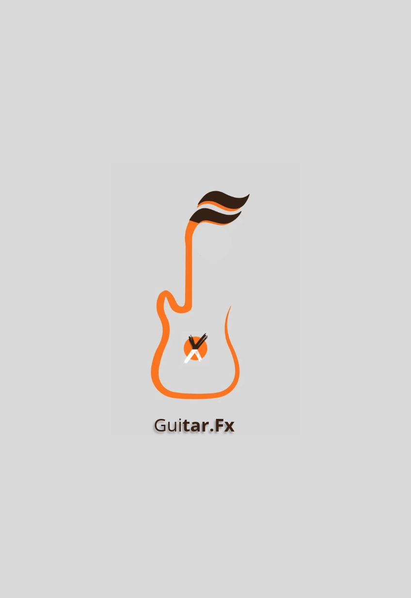

Plataforma especializada en la adaptación de presets, cadenas de señal y simulación de amplificadores para procesadores y pedaleras multiefectos.
Traducción de configuraciones de señal entre diferentes ecosistemas y procesadores multiefectos.
Ajuste de ganancia, impulsos de respuesta (IRs) y modelado de amplificadores para máxima fidelidad.
Configuración detallada de delays, reverbs y modulación optimizados para directos y estudio.